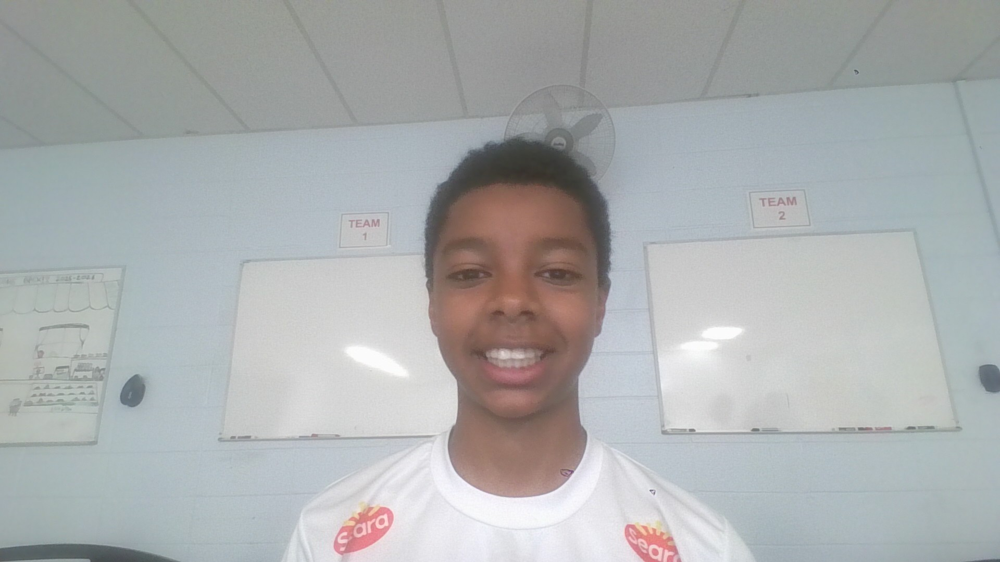

About Me
My Backround
Im a freshman attending Bergen Country Technical high school in
Teterboro New Jersey with computer science as my major
of choice.
The reasoning of my chocie to take computer science
as my major is
becuase it is a rapid growing feild with many opportunites
to gain
knowledge about what will dominate the entirety our future.
All the
aspects of coding are also intruiging and fun which in many ways like
learning an actual language but your communicating with a computer
instead of a person so the computer can communiate with another person
Outside of school I enjoy things like video games sports and other mixes
of outdoor and indoor activities in order to keep me entertained.
Im very enthusiastic of the development im making in my prgramming skills and
cant wait to further my education in this school.
Technical skills
- Currently learning: HTML5, CSS3, JavaScript, Bootstrap, JS, DOM
- Tools: VS Code, GitHub, Chrome DevTools
- Future Courses: Python, Intro to Machine Learning, AI - 10th Grade Advanced
- Future Courses: Programming (Backend Frameworks) & Game Development - 11th Grade
- CS Capstone Project: Senior year and Intro to Computing Java - 12th Grade
Education
Bergen County Techincal School - Bergen County
Computer Science Program
Class of 2029 Freshman
Current Course: Introduction to Programming
Career Goals
Certain career path subsections in computer science im leaning toward
as of now are ethical hacking, software development, and cyber security
Here at Bergen Tech Teterboro all of the tools and encouragment in order
for success (acedemically concerned) in each students respective seperate
"catogorys" is easily accessible with proper mentailty and effort.